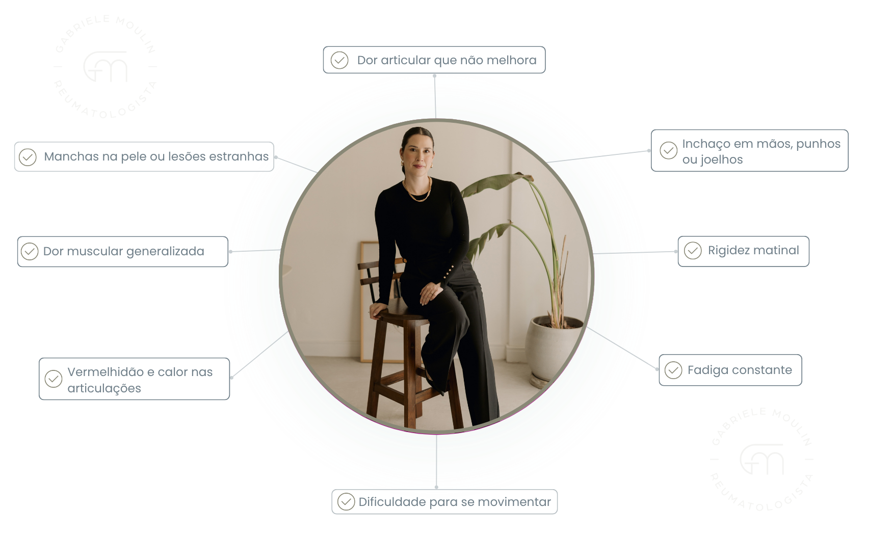
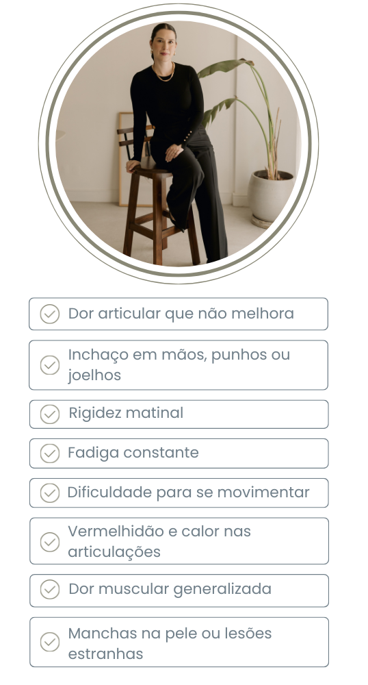

Especialista em doenças autoimunes e reumatológicas
Consulta Particular no bairro da Consolação em São Paulo.
-
Artrite Reumatoide
-
Artrite Psoriásica
-
Lúpus Eritematoso
-
Esclerose Sistêmica
-
Psoríase
-
Doenças Autoimunes
-
Osteoartrite

Dra. Gabriele Moulin
CRM 173729 | RQE 96674
Formada em Medicina pela Escola Superior de Ciências da Santa Casa de Misericórdia de Vitória em 2013. Realizou sua residência em Clínica Médica no Instituto de Assistencia ao Servidor Publico Estadual de São Paulo - Iamspe em 2015. Residencia em Reumatologia pela Santa Casa de São Paulo, conclusão em 2020. Titulo de Especialista pela Socidade Brasileira de reumatologia e membra da Socidade Paulista de Reumatologia. Atualmente em formação em ultrassonografia reumatologica. Atuo em hospitais como Beneficencia Portuguesa de São Paulo, Hospital Santa Cataria de São Paulo, no cuidado de pacientes reumatologicos, com foco em doenças autoimunes e tratamento imunobiologico. Com uma formação sólida há 12 anos, e compromisso com a atualização constante, ela busca proporcionar um tratamento humanizado e personalizado a seus pacientes, focando sempre no bem-estar e na qualidade de vida.
Nossos serviços

Consulta Reumatológica Completa
Avaliação detalhada com anamnese completa, exame físico especializado e solicitação de exames complementares para diagnóstico preciso de doenças reumatológicas.

Tratamento com Imunobiológicos
Prescrição e acompanhamento de medicamentos imunobiológicos modernos para artrite reumatoide, espondilite anquilosante, artrite psoriásica e outras doenças autoimunes.


Sintomas para procurar um reumatologista:
 Atuação em números
com cuidado e excelência
em Reumatologia
- • Formada em Medicina pela Escola Superior de Ciências da Santa Casa de Misericórdia de Vitória em 2013
- • Residência em Clínica Médica no Instituto de Assistencia ao Servidor Publico Estadual de São Paulo - Iamspe em 2015
- • Residência em Reumatologia pela Santa Casa de São Paulo, conclusão em 2020
- • Título de Especialista pela Sociedade Brasileira de Reumatologia e membro da Sociedade Paulista de Reumatologia

Principais condições tratadas:
Lúpus Eritematoso Sistêmico
Diagnóstico e tratamento especializado do lúpus, doença autoimune sistêmica, com protocolos atualizados e medicamentos imunossupressores modernos.
Artrite Reumatoide
Tratamento especializado da artrite reumatoide, doença autoimune que afeta as articulações, incluindo medicamentos imunobiológicos e acompanhamento contínuo.
Esclerose Sistêmica
Diagnóstico e tratamento da esclerose sistêmica, doença autoimune que afeta pele e órgãos internos, com abordagem multidisciplinar e medicamentos imunossupressores.
Artrite Psoriásica
Tratamento personalizado da artrite psoriásica, doença autoimune que combina artrite e psoríase, com foco na melhoria da qualidade de vida.
Síndrome de Sjögren
Diagnóstico e tratamento da síndrome de Sjögren, doença autoimune que afeta glândulas salivares e lacrimais, com foco na melhoria da qualidade de vida.
Vasculites Sistêmicas
Diagnóstico e tratamento de vasculites, doenças autoimunes que afetam os vasos sanguíneos, com protocolos especializados e medicamentos imunossupressores.
Psoríase
Diagnóstico e acompanhamento da psoríase, doença autoimune da pele, com tratamento personalizado e integrado incluindo medicamentos imunobiológicos.
Miopatias Inflamatórias
Diagnóstico e tratamento de miopatias inflamatórias, doenças autoimunes que afetam os músculos, incluindo polimiosite e dermatomiosite.
Osteoartrite
Tratamento de osteoartrite com abordagem conservadora e medicamentos específicos.
Investigação de Doenças Autoimunes
Investigação completa de sintomas sugestivos de doenças autoimunes, incluindo exames laboratoriais especializados e diagnóstico preciso.
Acompanhe meu trabalho no Instagram
Fique por dentro das novidades, dicas e informações sobre reumatologia


E muito mais !